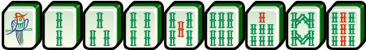

What is Singapore Mahjong?

Singapore Mahjong, also known as Singaporean or Singapore-style Mahjong, is a variant of the traditional Chinese tile-based game that incorporates unique rules and gameplay elements. It typically involves four players and uses a set of tiles adorned with Chinese characters and symbols. Singapore Mahjong is distinguished by its specific scoring rules, distinct tile combinations, and regional variations that set it apart from other forms of Mahjong played worldwide.
Different Categories of Tiles
In a typical Singapore Mahjong game, there are 148 tiles. Most of the tiles have four copies each, except for the flower and animal tiles, which only have one copy.
Below are the following groups of tiles that exist in a Mahjong game.
-
Bamboo, Circle and Character Suits

There are 36 tiles each of the Circle, Bamboo, and Character suits. Each one of these suits has numerical tiles ranging from one to nine containing 4 tiles for each number in the suit. These tiles are shown above.
-
Honour Tiles
There are two categories of honour tiles, namely the four Wind tiles and the three Dragon tiles.
Wind Tiles
The four Wind tiles are the four tiles that are shown above. These tiles are used to indicate the four different directions on a compass. Bonus point are scored if the meld matches the seat wind or the prevailing round wind or both. There are 4 copies of each tile.
Dragon Tiles
The three Dragon tiles are the three tiles that are shown above. Similar to the Wind tiles, the Dragon tiles have 4 copies of each tiles, and bonus points are scored when melded, with no other conditions.
-
Flower Tiles
Flower tiles are not used in melds. Instead, when drawn, they are set aside and the player gets to draw another tile from the dead wall (aka flower pile). These flower tiles provide additional multipliers if the flower matches the players' seat numbers. There are two sets of flower tiles, and they represent the Four Seasons - Spring, Summer, Autumn, Winter - and the Four Gentlemen - Plum, Orchid, Chrysanthemum, Bamboo.
-
Animals
Animal tiles are rather unique to Singapore Mahjong. They function in the same manner as flower tiles, with the only difference being that they provide additional multipliers regardless of player seat, meaning to say they are universal.
Where to Play?
Below are links to websites that allow you to play Singapore Mahjong online either with bots or family or friends.